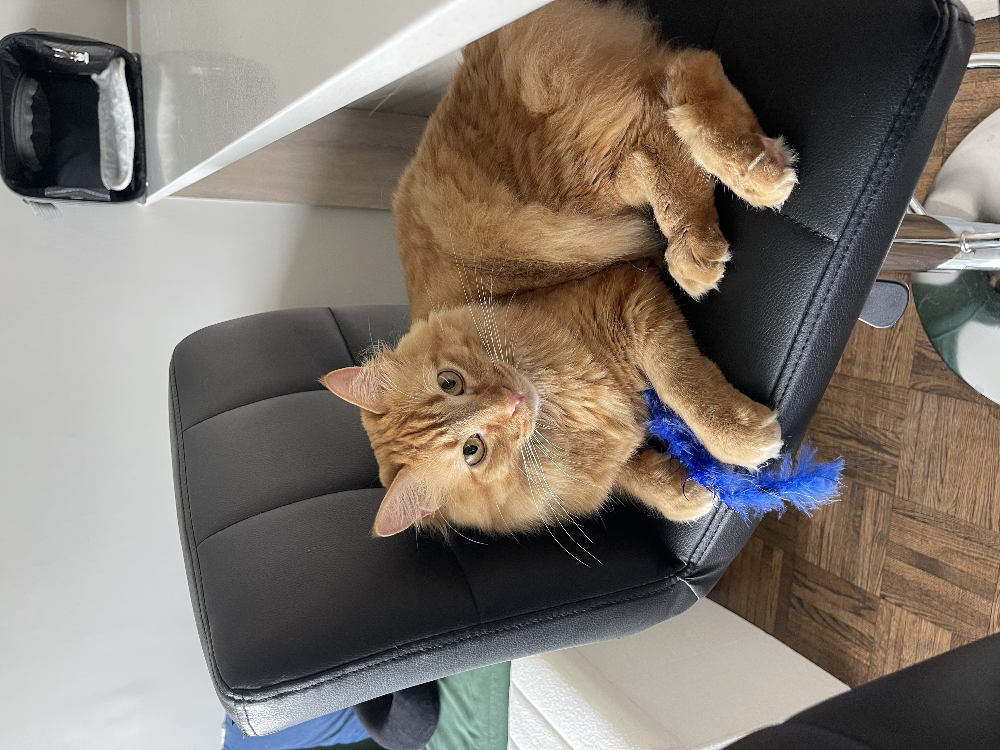
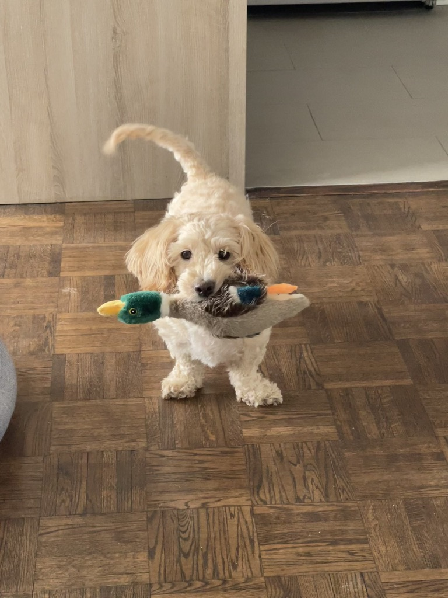

a tiny page to practice branches and pull requests.
about this page
this repository is set up so we can each create a branch, add text and images about our cats/pets/fur friends, then open a pull request.
our gallery

juno — diana's 3yo orange cat full of energy who loves to play with wand toys and is always up for a churu treat

andy — diana's 10yo maltese dog who is the sweetest thing (juno's best friend)suki — steph's cat